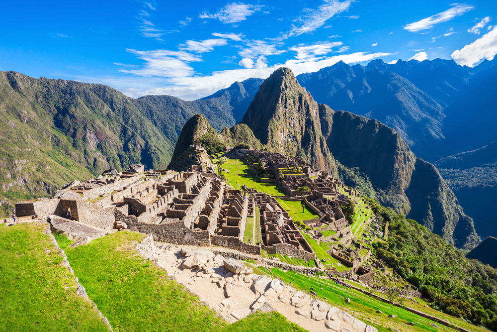
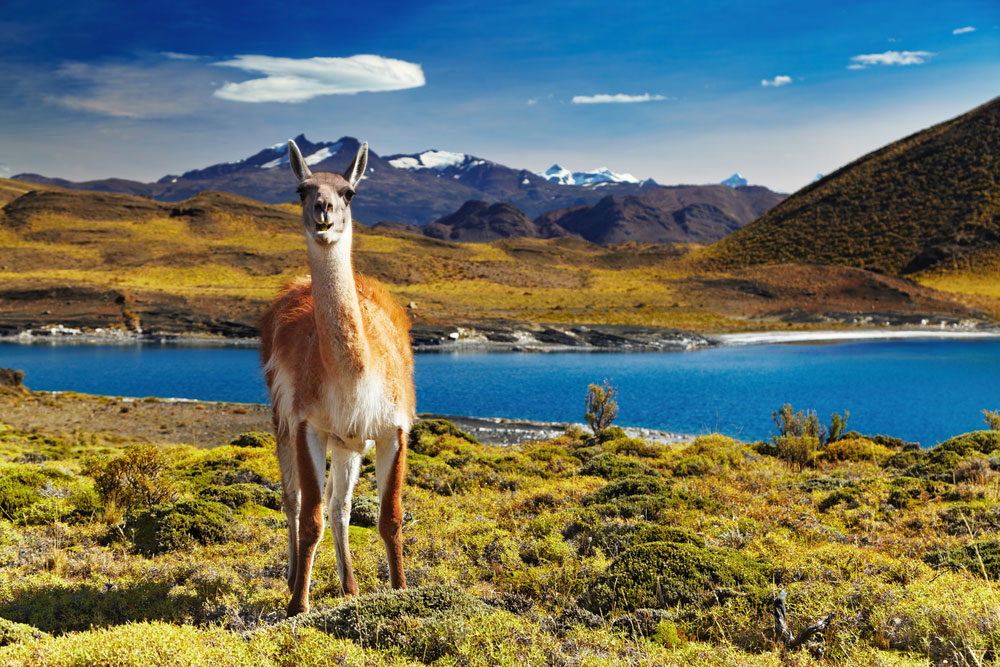

2- Huyana Pesto, Peru

It is the “Lost City” of the ancient Inca civilization,
located among the Peruvian Andes at an altitude of 2,160 meters
above sea level and above the Sacred Valley or the Urubamba Valley.
It has the Temple of the Moon inside a large cave, and the Temple of the Sun,
which is located inside a trenches among the ruins. It is one of the world heritage sites.
3- Torres del Paine National Park, Chile

A famous nature reserve and national park in southern Chile.
Its name means "blue sky towers" in the Native American language,
and it is considered the eighth wonder in the world thanks to the beauty of its landscapes.
It has been included in the UNESCO World Heritage List.
4- Copacabana in Rio de Janeiro, Brazil

It is an administrative sector in the southern part of Rio de Janeiro,
the largest city in Brazil. It is considered one of the most famous beaches in the world,
overlooking the Atlantic Ocean with a length of 4 km.